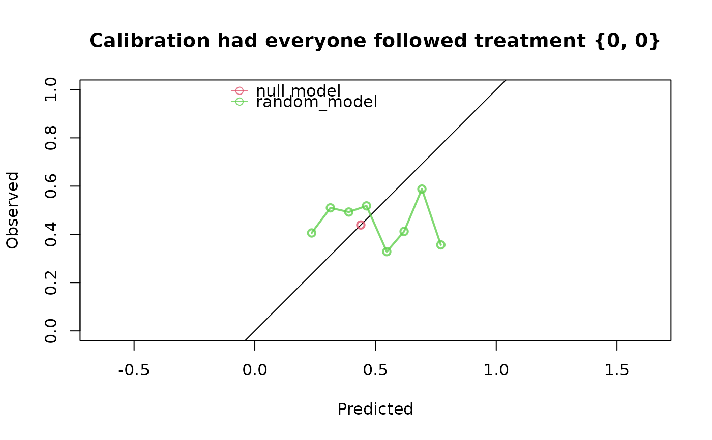
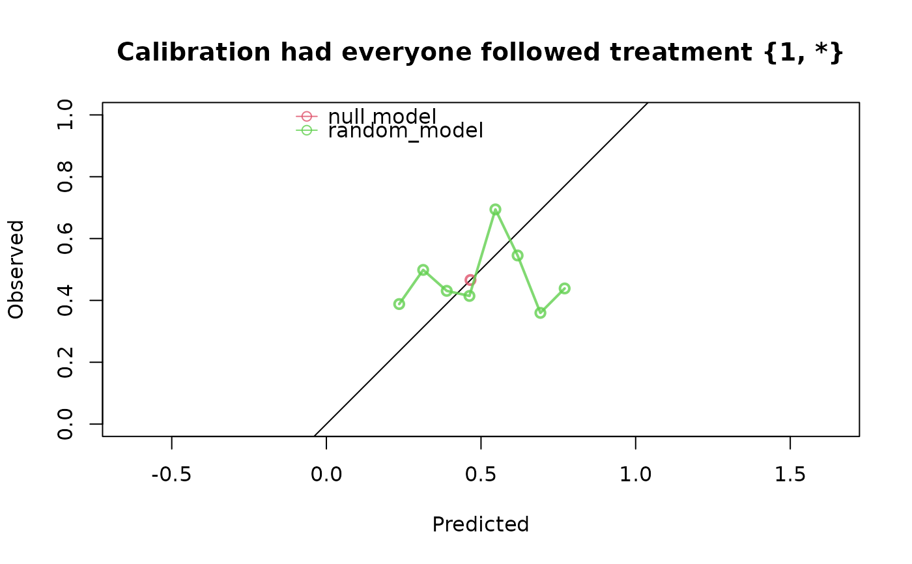

Interventional prediction score for longitudinal treatment strategies
Source:R/ip_score_long.R
ip_score_long.RdEstimates the predictive performance of predictions of binary (or time-to-event) outcomes under longitudinal intervention strategies, by reweighting the data to form a pseudo-population in which every subject was assigned the longitudinal treatment strategy of interest.
Usage
ip_score_long(
predictions,
data_outcome,
data_long,
treatment_formula,
treatment_of_interest,
metrics = c("auc", "brier", "scaled_brier", "oeratio", "calplot"),
visit_times,
time_horizon,
cens_model = "KM",
cens_formula = ~1,
null_model = TRUE,
bootstrap = 0,
bootstrap_progress = TRUE,
iptw,
ipcw,
quiet = FALSE,
strip_ipt_models = TRUE
)Arguments
- predictions
A numeric vector corresponding to the risk estimates under evaluation, or a (named) list of multiple numeric vectors for evaluating and comparing multiple vectors.
- data_outcome
A dataframe containing the observed outcomes. It must consist of 1 row per subject, with columns 'id', 'time', and 'status'. Time can be continuous, status represents the binary outcome status at ‘time’.
- data_long
A dataframe in 'long' format, containing the time-dependent treatment variable, the (potentially time-dependent) adjustment variables (confounders) and other time dependent covariates, possibly required for modeling the censoring mechanism. Baseline covariates can also be included, in which case they would be repeated for every visit. The data should be in 'long' format, i.e. each subject has one row for each of their visits. Must include the columns 'id' and 'visit_time'. There should not be any visits after a subject's follow up time. All subjects should have data at each visit.
- treatment_formula
A formula which indicates the treatment/intervention (left hand side) and the adjustment variables (right hand side) in data_long. E.g. A ~ L + A_lag_1. The left hand side can be either a binary treatment (coded as 0/1 numeric, logical or factor) or a treatment with more than two categories (coded as factor). The adjustment variables (right hand side) are used to estimate the inverse probability of treatment weights (IPTW). All variables on the right hand side must be present in data_long. The IPTW can also be specified directly using the iptw argument, in which case the right hand side of this formula is ignored (the left hand side must still indicate the treatment, i.e. A ~ 1).
- treatment_of_interest
A treatment strategy under which the predictions should be evaluated. Should be in the form of a vector, with one element per visit. See details.
- metrics
A character vector specifying which performance metrics to be computed. Options are c("auc", "brier", “scaled_brier”, "oeratio", "calplot").
- visit_times
A numeric vector, indicating the times of the visits at which sequential treatment decisions were made. The first visit must always be at time 0. Visit times are not necessarily equidistant.
- time_horizon
the prediction horizon of interest. Should be after the last visit.
- cens_model
Model for estimating inverse probability of censored weights (IPCW). Methods currently implemented are Kaplan-Meier ("KM") or Cox ("cox"), with censoring times derived from the (time,status) variables in data_outcome, reversing the status indicator, see details. KM is only supported when the right hand side of cens_formula is 1.
- cens_formula
Model formula used for estimating the censoring probabilities, e.g. ~ x1 + x2. Could consist of only baseline variables but also of time-dependent variables. All variables specified must be present in data_long.
- null_model
If TRUE a model without covariates (intercept only) is fitted to data that estimates the same probability for all subjects in data. The model is fitted using the reweighted data in which all subjects are 'counterfactually' assigned the treatment strategy of interest (using the IPTW, as estimated using the treatment_formula or as given by the iptw argument). For censored outcomes, the subjects are also 'counterfactually' uncensored (using the IPCW, as estimated using the cens_formula, or as given by the ipcw argument). The null model can be used as a reference (baseline) model.
- bootstrap
If this is an integer greater than 0, this indicates the number of bootstrap iterations, to compute 95% confidence intervals around the performance metrics.
- bootstrap_progress
if set to TRUE, print a progress bar indicating the progress of bootstrap procedure.
- iptw
A numeric vector with length nrow(data_outcome), containing one over the probability of being compliant to the treatment strategy of interest for each subject If iptw is not specified, these weights are computed using the treatment_formula, but they can be specified directly via this argument. A user-defined function can also be specified, which takes as input arguments 'data_outcome' and 'data_long' and returns a numeric vector of the IPTW weights. See details.
- ipcw
A numeric vector with length nrow(data_outcome), containing the inverse probability of censoring weights at the time horizon, or at their event time, whichever happens first. If ipcw is not specified, these weights are computed using the cens_formula, but they can be specified directly via this argument. A user-defined function can also be specified, which takes as input arguments 'data_outcome' and 'data_long' and returns a numeric vector of the IPCW weights. See details.
- quiet
If set to TRUE, don't print assumptions.
- strip_ipt_models
If set to TRUE (default), unnecessary components from the IPT- and IPC-model objects are not stored to save memory. Set to FALSE if you want to store the full IPT/IPC model objects.
Value
An object of class `ip_score`, for which the `print()` and `plot()` methods are implemented. The object is a nested list containing:
`$score`, contains the estimated predictive performance metrics.
`$bootstrap`, if requested, the 95% confidence intervals of the performance metrics, and the performance metrics for each individual bootstrap iteration.
`$outcome`, the observed outcomes from data_outcome.
`$treatment`, the observed treatment levels from data_long.
`$predictions`, the predictions to be evaluated, i.e. the estimated probability of event under the intervention strategy of interest for each subject.
`$ipt`, method, model and inverse probability of treatment weights (IPTW). These are NA for subjects who are not directly used in the pseudo-population.
`$ipc`, method, model and inverse probability of censoring weights (IPCW). These are NA for subjects who were censored.
`$pseudopop`, binary vector indicating which subjects of the original population were used to create the pseudo-population, by receiving the treatment strategy of interest and remaining uncensored, if applicable.
The print method summarizes the results and if (quiet = FALSE), prints the assumptions required for valid inference.
Details
To form a pseudo-population that represents a setting in which everybody received treatment level 1 during five visits, set `treatment_of_interest` to `c(1,1,1,1,1)`. Any pattern can be chosen, e.g. `c(1,0,1,0,1)` is also valid, as long as the number of visits equals ‘n_visits’. Alternatively, one could also set this argument to "always" or "never" as a shortcut for `rep(1, n_visits)` or `rep(0, n_visits)`. Treatment strategies where treatment is only set at certain visits are also possible via `NA`, e.g. use `c(1,1,NA, NA, NA)` when you want to form a pseudo-population where everybody's treatment levels are set to 1 at the first 2 visits, and their remaining three can be whatever they would have normally been after those first two under the natural course. If treatment is categorical, this should be a character vector denoting the treatment levels of interest, e.g `c(“active”,”control”).
The KM censoring distribution is estimated using `prodlim::prodlim(..., reverse = TRUE)`. This correctly estimates the censoring distribution when there are ties between event and censoring times. When using a Cox model to estimate the censoring distribution, the event indicator is reversed manually. This does not preserve the usual tie-handling convention: in standard survival analysis, censoring is assumed to occur after events at the same time point, but after reversing the indicator the opposite ordering is assumed. A possible workaround is to add a small positive offset (`epsilon`) to all censoring times before fitting the censoring model.
Bootstrapping is not possible when manually specifiying the IPTW/IPCW as numeric vectors. If specifying a model user-defined function that computes the ITPW/IPCW given data, it is possible. The given function will be called on each bootstrapped dataset and resulting metrics are used to compute the (empirical) 95% Cis. More advanced techniques such as thresholding extreme IP weights, can be implemented through a user-defined weight function. The censoring weight returned by this function should be the 1 / probability of remaining uncensored at the time horizon, or at their event time, whichever happens first.
References
Keogh RH, Van Geloven N. Prediction Under Interventions: Evaluation of Counterfactual Performance Using Longitudinal Observational Data. Epidemiology. 2024;35(3):329-339.
See also
Open the corresponding vignette for more extensive examples with
vignette("longitudinal", package = "ipeval")
Examples
set.seed(5)
n <- 1000
data <- data.frame(id = 1:n)
# 2 visits at t = 0 and t = 2. Time dependent confounding between A and L
# Here we generate random survival times between 0 and 6 as an example.
# See simulating-data vignette for another example where survival outcomes
# depend on time dependent L and A.
data <- within(data, {
L0 <- rnorm(n)
A0 <- rbinom(n, 1, plogis(0.7*L0))
L1 <- rnorm(n, 0.8*L0 - 0.2*A0)
A1 <- rbinom(n, 1, plogis(0.7*L1 + 0.6*A0))
time <- runif(n, 0, 6)
status <- rbinom(n, 1, 0.5)
})
# A0 is at time t = 0, A1 is at time t = 2
# If you have data in this 'wide' form, then usually you can use the convenience
# functions to make it suitable for ip_score_long
head(data)
#> id status time A1 L1 A0 L0
#> 1 1 0 4.094243 1 0.8174053 0 -0.84085548
#> 2 2 0 3.095679 0 1.0777666 1 1.38435934
#> 3 3 0 3.936240 0 1.2297761 1 -1.25549186
#> 4 4 1 5.390756 1 1.5875598 0 0.07014277
#> 5 5 0 1.245473 1 2.1049182 1 1.71144087
#> 6 6 0 4.491761 0 -1.0007181 1 -0.60290798
# note that due to our simulation there may be measurements after a subject was
# censored or had event. This will be removed later.
data_outcome <- data[, c("id", "time", "status")]
data_long <- wide_to_long(
df = data,
baseline_variables = "id",
wide_variables = list("A" = c("A0", "A1"),
"L" = c("L0", "L1")),
visit_times = c(0,2),
outcome_times = data$time
)
# adding treatment level at previous visit time to the data. For the first
# visit this is assumed to be 0 (fill)
data_long <- add_lag_terms(data_long, var = "A", lag = 1, fill = 0)
head(data_long)
#> id visit_time A L A_lag_1
#> 1 1 0 0 -0.8408555 0
#> 2 1 2 1 0.8174053 0
#> 3 2 0 1 1.3843593 0
#> 4 2 2 0 1.0777666 1
#> 5 3 0 1 -1.2554919 0
#> 6 3 2 0 1.2297761 1
# note that the measurements that were generated after follow up time have been
# removed by wide_to_long().
# To get some predictions to evaluate, here is a model that
# randomly predicts a number between 0.2 and 0.8
random_model <- runif(n, min = 0.2, max = 0.8)
# Our treatment at visit i depends on confounder value L at same visit and,
# if visit = 2, on treatment level at previous visit. We will illustrate a correctly
# specified IPTW model with A ~ L + A_lag_1.
# Estimate performance of random predictions in a pseudopopulation in
# which everybody was assigned treatment strategy {0, 0}
ip_score_long(
predictions = random_model,
data_outcome = data_outcome,
data_long = data_long,
treatment_formula = A ~ L + A_lag_1,
treatment_of_interest = c(0,0),
visit_times = c(0,2),
time_horizon = 4
)
#> Estimation of the performance of the prediction model in a
#> pseudopopulation where everyone's treatment A was set to {0, 0}.
#> The pseudopopulation is constructed from 217 (21.7%) subjects
#> ($pseudopop) in data who indeed were compliant to treatment strategy
#> {0, 0} and remained uncensored till time=4. These subjects are
#> reweighted to represent the full target population under a hypothetical
#> intervention in which everyone received this treatment strategy and
#> remained uncensored till time=4.
#> The following assumptions must be satisfied for correct inference:
#>
#> Causal assumptions:
#>
#> - Conditional exchangeability: after adjustment for the covariates used
#> to construct the inverse probability of treatment weights (IPTW), i.e.,
#> {L, A_lag_1}, there is no unmeasured confounding for the relation
#> between treatment and outcome.
#> - Conditional positivity: the probability of receiving treatment
#> strategy {0, 0} should be greater than zero for each value
#> (combination) of the variable(s) {L, A_lag_1} that is observed in the
#> full population. The distribution of IPT-weights can be assessed with
#> $ipt$weights[$pseudopop$ids].
#> - Consistency: the observed outcome under the received treatment
#> strategy equals the potential outcome under that treatment strategy.
#> This includes the assumption of no interference between subjects.
#> - Independent censoring. The censoring mechanism is completely
#> independent of the outcome process.
#> - Positivity for censoring: requires that the probability of remaining
#> uncensored till time=4 is greater than zero. The distribution of
#> IPC-weights can be assessed with $ipc$weights[$pseudopop$ids].
#>
#> Modeling assumptions:
#>
#> - Correctly specified propensity model. Estimated treatment model is
#> logit(A) = 0.05 + 0.72*L + 0.18*A_lag_1. See also $ipt$model.
#> - The censoring distribution was estimated nonparametrically using the
#> Kaplan-Meier estimator. The probability of remaining uncensored is
#> P(C > 4) = 0.59. See also $ipc$model.
#>
#> Performance estimates:
#>
#> model auc brier scaled_brier oeratio
#> null model 0.5 0.246 0.0 1.000
#> random_model 0.5 0.281 -14.1 0.872

# Performance of random predictions in a pseudopopulation in
# which everybody was assigned treatment level 1 at visit 1, and whatever
# they would normally have after that (natural course) at visit 2, and modelling
# the censoring distribution with Cox model
ip_score_long(
predictions = random_model,
data_outcome = data_outcome,
data_long = data_long,
treatment_formula = A ~ L + A_lag_1,
treatment_of_interest = c(1,NA),
visit_times = c(0,2),
time_horizon = 4,
cens_model = "cox",
cens_formula = ~ A + A_lag_1 + L
)
#> Estimation of the performance of the prediction model in a
#> pseudopopulation where everyone's treatment A was set to {1, *}, where
#> * can be any value as would normally be observed.
#> The pseudopopulation is constructed from 330 (33%) subjects
#> ($pseudopop) in data who indeed were compliant to treatment strategy
#> {1, *} and remained uncensored till time=4. These subjects are
#> reweighted to represent the full target population under a hypothetical
#> intervention in which everyone received this treatment strategy and
#> remained uncensored till time=4.
#> The following assumptions must be satisfied for correct inference:
#>
#> Causal assumptions:
#>
#> - Conditional exchangeability: after adjustment for the covariates used
#> to construct the inverse probability of treatment weights (IPTW), i.e.,
#> {L, A_lag_1}, there is no unmeasured confounding for the relation
#> between treatment and outcome.
#> - Conditional positivity: the probability of receiving treatment
#> strategy {1, *} should be greater than zero for each value
#> (combination) of the variable(s) {L, A_lag_1} that is observed in the
#> full population. The distribution of IPT-weights can be assessed with
#> $ipt$weights[$pseudopop$ids].
#> - Consistency: the observed outcome under the received treatment
#> strategy equals the potential outcome under that treatment strategy.
#> This includes the assumption of no interference between subjects.
#> - Conditionally independent censoring: conditional on variables
#> {ipscore_longcensored, A, A_lag_1, L}, censoring is independent of the
#> outcome process.
#> - Conditional positivity for censoring: requires that for all observed
#> combinations of the covariate variables {ipscore_longcensored, A,
#> A_lag_1, L} the probability of remaining uncensored till time=4 is
#> greater than zero. The distribution of IPC-weights can be assessed
#> with $ipc$weights[$pseudopop$ids].
#>
#> Modeling assumptions:
#>
#> - Correctly specified propensity model. Estimated treatment model is
#> logit(A) = 0.05 + 0.72*L + 0.18*A_lag_1. See also $ipt$model.
#> - Correctly specified censoring model. The estimated censoring model is
#> P(C > t) = C_0(t)^exp(0.14*A + 0.07*A_lag_1 + -0.09*L). See also
#> $ipc$model.
#>
#> Performance estimates:
#>
#> model auc brier scaled_brier oeratio
#> null model 0.500 0.249 0.0 1.000
#> random_model 0.511 0.276 -10.8 0.926
